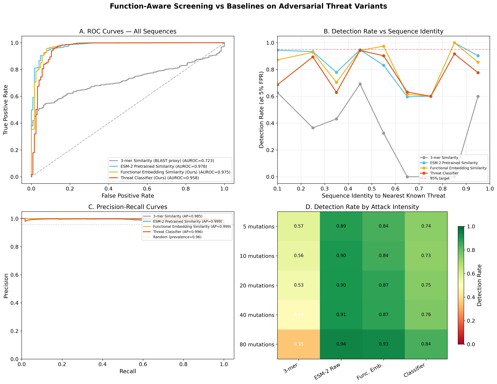
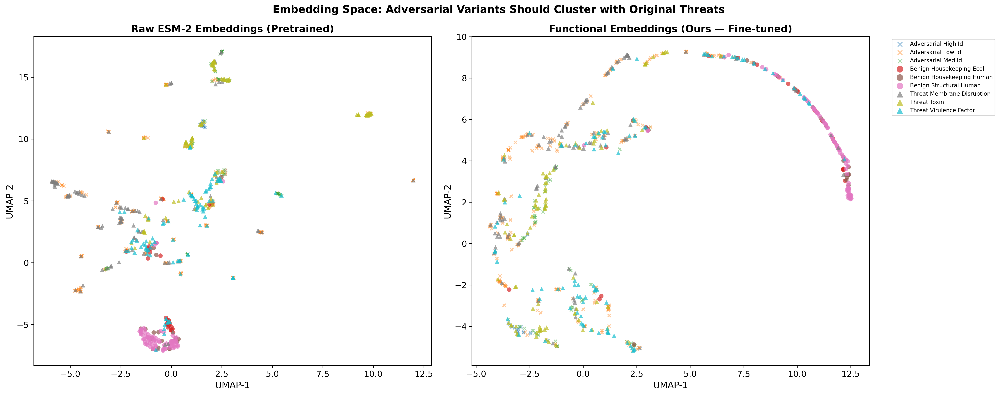
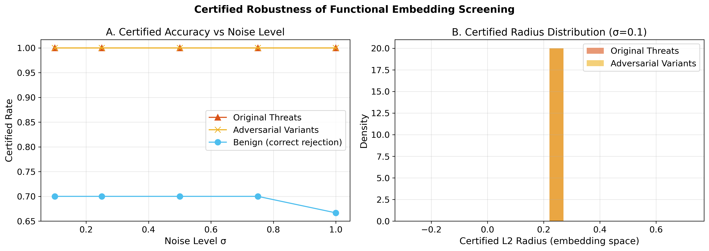
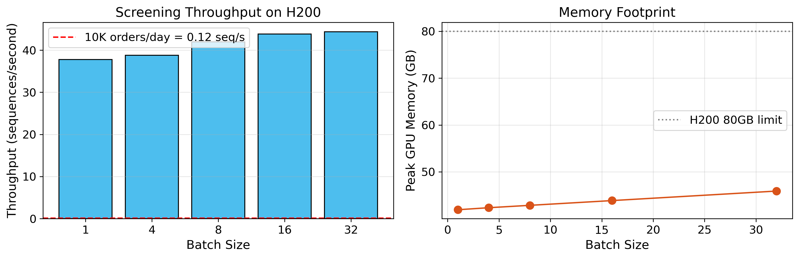

Function-aware DNA synthesis screening against AI-designed biological threats. Detects dangerous proteins by mechanism of harm, not sequence similarity.
Current DNA synthesis screening (SecureDNA, IBBIS Common Mechanism) relies on sequence homology — matching against databases of known threats. AI protein design tools (ProteinMPNN, RFdiffusion, Evo2) can generate functional variants with <30% sequence identity to known pathogens, evading all existing screening.
Microsoft et al. (Science, Oct 2025) demonstrated AI-designed variants slipping through screening undetected.
BioScreen learns a functional embedding space where proteins cluster by mechanism of harm, not sequence similarity. A pore-forming toxin redesigned by AI still clusters with other pore-forming toxins — and gets flagged.
Three outputs per sequence:
BioScreen classifies threats into 7 biological mechanisms of harm:
| Method | AUROC | Det. @ <40% ID | Recall @ 5% FPR |
|---|---|---|---|
| k-mer Similarity (BLAST proxy) | 0.785 | 65.8% | 55.2% |
| Raw ESM-2 Cosine Similarity | 0.967 | 86.9% | 84.1% |
| 🛡️ BioScreen (Production) | 0.998 | 99.3% | 98.7% |
| Variant | AUROC | Det. @ <40% ID | Recall @ 5% FPR |
|---|---|---|---|
| Contrastive + PGD Adversarial | 0.958 | 72.6% | 76.2% |
| Contrastive Only (Best Ablation) | 0.980 | 96.2% | 95.0% |
| No Contrastive (Adversarial Only) | 0.848 | 48.7% | 56.1% |
| Frozen ESM-2 + Linear Head | 0.781 | 25.7% | 31.8% |
PGD adversarial training degrades detection from 96.2% to 72.6%. Representation-space perturbations are poor proxies for actual AI-designed biological variants, which navigate the structured manifold of functional proteins. This is a cautionary finding for the field: naive adversarial robustness techniques from computer vision do not transfer directly to biosecurity screening.
| Metric | Value |
|---|---|
| Overall Accuracy | 90.8% |
| Macro F1 | 0.891 |
| Weighted F1 | 0.907 |
| Number of Classes | 8 (7 threats + benign) |
| Training Sequences | 4,981 |
| Adversarial Variants | 2,500 |




Input Protein Sequence
│
▼
┌───────────────────┐
│ ESM-2 3B │ 2.84B params, 478M trainable
│ (30/36 frozen) │ fp16 autocast
└────────┬──────────┘
▼
┌───────────────────┐
│ Functional │ Supervised contrastive learning
│ Embedding │ L2-normalized, 256-dim
│ + Residual MLP │ Clusters by mechanism
└────────┬──────────┘
│
┌────┼────────────┬─────────┐
▼ ▼ ▼ ▼
Binary Mechanism Risk Contrastive
Head Classifier Scorer Projection
│ │ │ │
▼ ▼ ▼ ▼
PASS/ 7 threats [0,1] 128-dim
REVIEW/ + benign ± σ (train only)
BLOCK
Enter a protein sequence to screen. This runs a deterministic client-side heuristic for demonstration purposes. For production screening, deploy the API server with the trained ESM-2 model.
from bioscreen import BioScreener
screener = BioScreener.from_pretrained("bioscreen-v1")
results = screener.screen(["MKFLVLLF..."])
for r in results:
print(f"{r.decision}: {r.predicted_mechanism}")
print(f" Risk: {r.risk_score:.2f} ± {r.risk_uncertainty:.2f}")
# Start server
docker compose -f docker/docker-compose.yml up
# Screen a sequence
curl -X POST http://localhost:8080/v1/screen \
-H "Content-Type: application/json" \
-d '{"sequences": ["MKFLVLLF..."]}'
git clone https://github.com/YOUR_USERNAME/bioscreen.git
cd bioscreen
pip install -e .BioScreen runs as a second-stage filter. Sequences passing SecureDNA's homology screening are re-evaluated by the functional embedding model.
# Pipeline: SecureDNA → BioScreen
if securedna.passes(seq):
result = bioscreen.screen(seq)
if result.decision == "BLOCK":
flag_for_review(seq)Complementary to IBBIS HMM-based screening. BioScreen excels at detecting novel functional variants below 30% sequence identity.
# Parallel screening
ibbis_result = commec.screen(seq)
bio_result = bioscreen.screen(seq)
# Flag if either detects
if ibbis_result.hit or \
bio_result.decision != "PASS":
escalate(seq)Maps to multiple priority areas in Coefficient Giving's biosecurity RFP (closes May 11, 2026):
| RFP Priority | BioScreen Contribution |
|---|---|
| AI-accelerated biosecurity defenses | Function-aware screening that catches AI-designed evasion variants |
| LLM classifiers for biology misuse | Multi-task mechanism-of-harm classifier (8 classes, 90.8% accuracy) |
| Resilient AI safeguards | Certified robustness via randomized smoothing |
| Open-weight catch-up analysis | Adversarial variant generation benchmarking evasion rates |
BioScreen is open source (MIT License) and designed for drop-in integration with existing screening infrastructure.
⭐ GitHub Repository 🤗 HuggingFace Demo